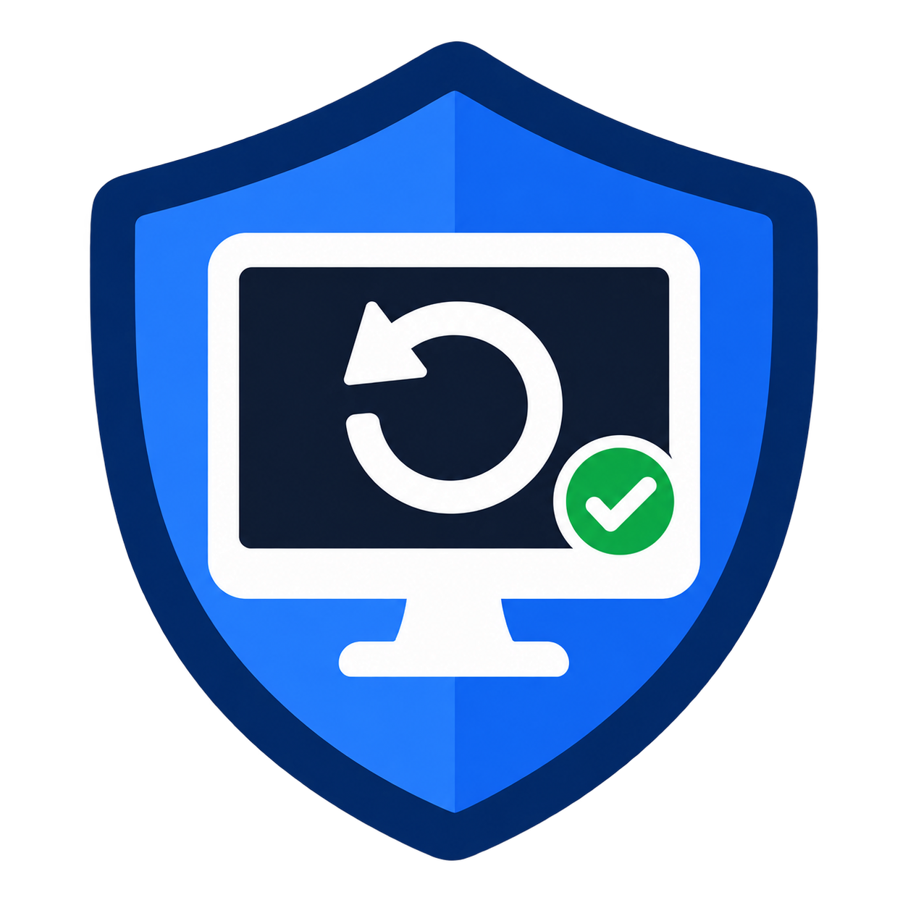

FREE
0 ₽
Инвентаризация перед переустановкой Windows.
- Сканирование программ, данных и оборудования
- Просмотр игр, драйверов и продуктов с лицензиями
- Полная инструкция внутри программы

Паспорт компьютера для Windows 10/11
Оплата требуется только для сохранения и восстановления выбранных данных.
RePC не обходит Steam Guard, DRM, серверные проверки и условия правообладателей. Возможность переноса конкретной программы или данных показывается после сканирования и зависит от конфигурации компьютера.
Предупреждение Windows SmartScreen может появляться у новых или неподписанных сборок. Загружайте RePC только с официальной страницы и сверяйте опубликованный SHA‑256.